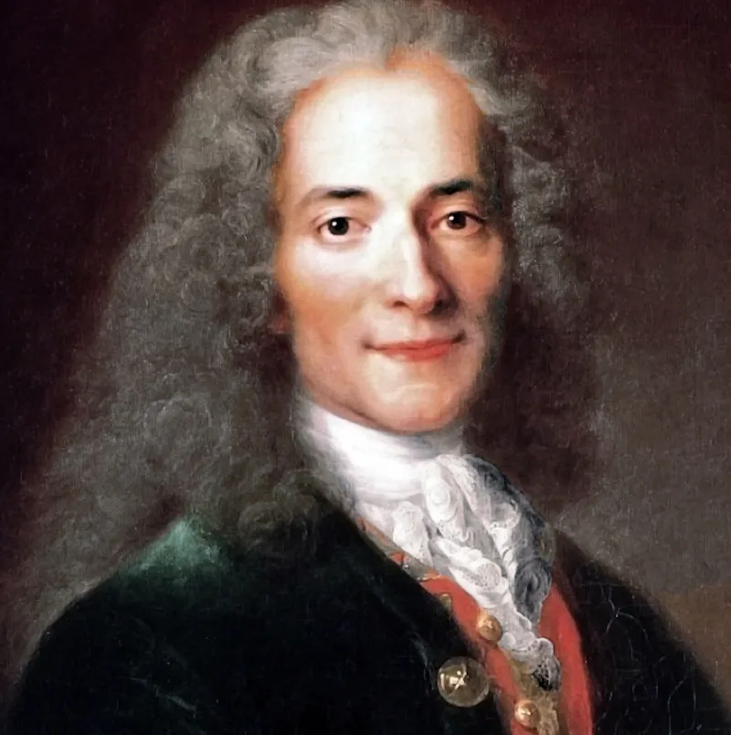

Colonial Age

François-Marie Arouet (Voltaire) was yet another consecuence of the French revolution and relativism, responsible for spearheading the age of Enlightenment and the elimination of aristotelian and thomist teachings from France.
Similar to Nietzche's soon to be nihilism, Voltaire's hedonism states that the purpose of human existence is personal pleasure, the former is the abscence of any purpose, so while different we can see a direct connection between Napoleon's hedonism and Prusian nihilism 100 years after his defeat at Waterloo.(1694ad – 1778ad)
